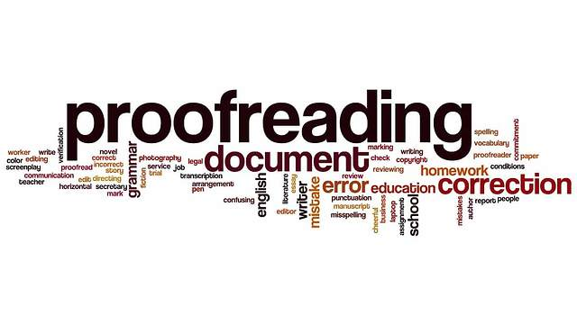

Proofreading applications and software are used almost every blogging site. With a replacement probability of almost 84%, this job will soon be done only by automated software in the next few years. There are now self-checking writing tools and applications that not only helps in checking and detecting grammatical errors rather it also detect plagiarism and corrects the sentence structures.
 Back to home